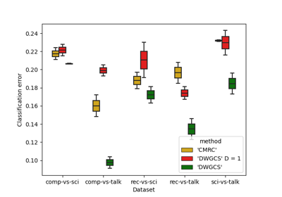

MRCpy.DWGCS¶
- class MRCpy.DWGCS(loss='0-1', deterministic=True, random_state=None, fit_intercept=False, D=4, sigma_=None, B=1000, solver='adam', alpha=0.01, stepsize='decay', mini_batch_size=None, max_iters=None, weights_beta=None, weights_alpha=None, phi='linear', **phi_kwargs)[source]¶
Double-Weighting for General Covariate Shift
This class implements the Double-Weighting for General Covariate Shift (DW-GCS) method proposed in [1]. It is designed for supervised classification under covariate shift, where the marginal distributions of instances at training \(\mathrm{p}_{\text{tr}}(x)\) and testing \(\mathrm{p}_{\text{te}}(x)\) differ but the label conditionals coincide.
The classifier solves the minimax risk problem:
\[\mathrm{h}^{\mathcal{U}_2} \in \arg\min_{\mathrm{h}} \max_{\mathrm{p} \in \mathcal{U}_2} \ell(\mathrm{h}, \mathrm{p})\]which finds the classifier \(\mathrm{h}\) that minimizes the worst-case expected loss over an uncertainty set \(\mathcal{U}_2\) of distributions.
The uncertainty set \(\mathcal{U}_2\) is constructed using both training weights \(\beta(x)\) and testing weights \(\alpha(x)\), with feature mappings weighted by \(\alpha(x)\) as \(\Phi_\alpha(x,y) = \alpha(x) \Phi(x,y)\):
\[\mathcal{U}_2 = \left\{ \mathrm{p} : \mathrm{p}_x = \mathrm{p}_{\text{te}}(x), \; \left| \mathbb{E}_{\mathrm{p}}[\Phi_\alpha(x,y)] - \boldsymbol{\tau} \right| \leq \boldsymbol{\lambda} \right\}\]where \(\boldsymbol{\tau}\) is estimated using \(\beta\)-weighted training samples as \(\boldsymbol{\tau} = \frac{1}{n} \sum_{i=1}^{n} \beta(x_i) \Phi(x_i, y_i)\), and \(\boldsymbol{\lambda}\) is obtained by solving a convex optimization that ensures the uncertainty set is non-empty.
The double-weighting approach avoids the limitations of the reweighted methods (which only weight training samples by \(\mathrm{p}_{\text{te}}/\mathrm{p}_{\text{tr}}\)) and robust methods (which only weight testing samples by \(\mathrm{p}_{\text{tr}}/\mathrm{p}_{\text{te}}\)). By using both weights, DW-GCS can handle general covariate shift scenarios where the supports of training and testing distributions do not need to contain each other.
The weights \(\alpha(x)\) and \(\beta(x)\) are obtained by solving a Double-Weighting Kernel Mean Matching (DW-KMM) problem. The hyperparameter
Dcontrols the trade-off between estimation error and prediction confidence: the estimation error is of order \(\mathcal{O}(1/\sqrt{Dn})\), so largerDincreases the effective sample size by a factor ofDcompared with reweighted methods.It implements 0-1 and log loss, and can be used with linear, Random Fourier, and ReLU features.
See [1] for further details.
- Parameters:
- loss
str{‘0-1’, ‘log’}, default = ‘0-1’ Type of loss function to use for the risk minimization. 0-1 loss quantifies the probability of classification error at a certain example for a certain rule. Log-loss quantifies the minus log-likelihood at a certain example for a certain rule.
- deterministic
bool, default =True Whether the prediction of the labels should be done in a deterministic way (given a fixed
random_statein the case of using random Fourier or random ReLU features).- random_state
int, RandomState instance, default =None Random seed used when ‘fourier’ and ‘relu’ options for feature mappings are used to produce the random weights.
- fit_intercept
bool, default =False Whether to calculate the intercept for MRCs. If set to false, no intercept will be used in calculations (i.e. data is expected to be already centered).
- D
int, default =4 Hyperparameter that controls the trade-off between error in expectation estimates and confidence of the classification. The weights are computed using \(C = B / \sqrt{D}\). Larger values of
Dreduce estimation error (effective sample size increases by factorD) but may reduce prediction confidence for testing instances unlikely at training.D=1: Only training weights \(\beta(x)\) are used (reweighted approach, \(\alpha(x) = 1\)).D=inf: Only testing weights \(\alpha(x)\) are used (robust approach, \(\beta(x) = 1\)).1 < D < inf: Both weights are used (double-weighting).
- B
int, default =1000 Upper bound on the maximum value of the training weights \(\beta(x)\). Used in the DW-KMM optimization to constrain \(\beta(x) \leq B / \sqrt{D}\).
- solver{‘cvx’, ‘grad’, ‘adam’}, default = ‘adam’
Method to use in solving the optimization problem. Default is ‘adam’. To choose a solver, you might want to consider the following aspects:
- ‘cvx’
Solves the optimization problem using the cvxpy library. Obtains an accurate solution while requiring more time than the other methods. Note that the library uses the GUROBI solver in cvxpy for which one might need to request for a license. A free license can be requested here
- ‘grad’
Solves the optimization using stochastic gradient descent. The parameters
max_iters,stepsizeandmini_batch_sizedetermine the number of iterations, the learning rate and the batch size for gradient computation respectively. Note that the implementation uses nesterov’s gradient descent in case of ReLU and threshold features, and the above parameters do not affect the optimization in this case.- ‘adam’
Solves the optimization using stochastic gradient descent with adam (adam optimizer). The parameters
max_iters,alphaandmini_batch_sizedetermine the number of iterations, the learning rate and the batch size for gradient computation respectively. Note that the implementation uses nesterov’s gradient descent in case of ReLU and threshold features, and the above parameters do not affect the optimization in this case.
- alpha
float, default =0.001 Learning rate for ‘adam’ solver.
- mini_batch_size
int, default =1or32 The size of the batch to be used for computing the gradient in case of stochastic gradient descent and adam optimizer. In case of stochastic gradient descent, the default is 1, and in case of adam optimizer, the default is 32.
- max_iters
int, default =100000or5000or2000 The maximum number of iterations to use in case of ‘grad’ or ‘adam’ solver. The default value is 100000 for ‘grad’ solver and 5000 for ‘adam’ solver and 2000 for nesterov’s gradient descent.
- weights_alpha
array, default =None Pre-computed testing weights \(\alpha(x)\) associated to each testing instance. If only
weights_alphais given, the method fixes \(\beta(x) = 1\) (robust approach).- weights_beta
array, default =None Pre-computed training weights \(\beta(x)\) associated to each training sample. If only
weights_betais given, the method fixes \(\alpha(x) = 1\) (reweighted approach).- phi
strorBasePhiinstance, default = ‘linear’ Type of feature mapping function to use for mapping the input data. The currently available feature mapping methods are ‘fourier’, ‘relu’, and ‘linear’. The users can also implement their own feature mapping object (should be a
BasePhiinstance) and pass it to this argument. Note that when using ‘fourier’ feature mapping, training and testing instances are expected to be normalized. To implement a feature mapping, please go through the Feature Mappings section.- ‘linear’
It uses the identity feature map referred to as Linear feature map. See class
BasePhi.- ‘fourier’
It uses Random Fourier Feature map. See class
RandomFourierPhi.- ‘relu’
It uses Rectified Linear Unit (ReLU) features. See class
RandomReLUPhi.
- **phi_kwargsAdditional parameters for feature mappings.
Groups the multiple optional parameters for the corresponding feature mappings(
phi).For example in case of fourier features, the number of features is given by
n_componentsparameter which can be passed as argumentDWGCS(loss='log', phi='fourier', n_components=300)The list of arguments for each feature mappings class can be found in the corresponding documentation.
- loss
See also
MRCpy.CMRCCMRC using uncertainty set \(\mathcal{U}_2\) with marginal constraints [2].
References
[1] (1,2)Segovia-Martín, J.I., Mazuelas, S., & Liu, A. (2023). Double-Weighting for Covariate Shift Adaptation. In Proceedings of the 40th International Conference on Machine Learning, pp. 30439-30457.
[2]Mazuelas, S., Shen, Y., & Pérez, A. (2022). Generalized Maximum Entropy for Supervised Classification. IEEE Transactions on Information Theory, 68(4), 2530-2550.
- Attributes:
- is_fitted_
bool Whether the classifier is fitted i.e., the parameters are learnt.
- beta_
array-like of shape (n_train_samples, 1) Training weights \(\beta(x)\) obtained from the DW-KMM optimization.
- alpha_
array-like of shape (n_test_samples, 1) Testing weights \(\alpha(x)\) obtained from the DW-KMM optimization.
- classes_
array-like of shape (n_classes,) Labels in the given dataset.
- mu_
array-like of shape (n_features,) orfloat Parameters learnt by the optimization.
- sigma_
float Kernel bandwidth parameter for the RBF kernel used in DW-KMM.
- is_fitted_
Methods
DWKMM(xTr, xTe)Obtain training and testing weights.
error(X, Y)Return the mean error obtained for the given test data and labels.
fit(xTr, yTr[, xTe])Fit the MRC model.
Get metadata routing of this object.
get_params([deep])Get parameters for this estimator.
Returns the upper bound on the expected loss for the fitted classifier.
minimax_risk(X, tau_mat, lambda_mat, n_classes)Solves the marginally constrained minimax risk optimization problem for different types of loss (0-1 and log loss).
predict(X)Predicts classes for new instances using a fitted model.
Computes conditional probabilities corresponding to each class for the given unlabeled instances.
psi(phi_mu, phi)Function to compute the psi function in the objective using the given solution mu and the feature mapping corresponding to a single instance.
score(X, y[, sample_weight])Return the mean accuracy on the given test data and labels.
set_fit_request(*[, xTe, xTr, yTr])Request metadata passed to the
fitmethod.set_params(**params)Set the parameters of this estimator.
set_score_request(*[, sample_weight])Request metadata passed to the
scoremethod.- DWKMM(xTr, xTe)[source]¶
Obtain training and testing weights.
Computes the weights associated to the training and testing samples solving the DW-KMM problem.
- Parameters:
- Returns:
- self :
Fitted estimator with
beta_andalpha_attributes set.
- __init__(loss='0-1', deterministic=True, random_state=None, fit_intercept=False, D=4, sigma_=None, B=1000, solver='adam', alpha=0.01, stepsize='decay', mini_batch_size=None, max_iters=None, weights_beta=None, weights_alpha=None, phi='linear', **phi_kwargs)[source]¶
Initialize self. See help(type(self)) for accurate signature.
- error(X, Y)¶
Return the mean error obtained for the given test data and labels.
- Parameters:
- Xarray-like of shape (n_samples, n_dimensions)
Test instances for which the labels are to be predicted by the MRC model.
- Yarray-like of shape (n_samples, 1), default=None
Labels corresponding to the testing instances used to compute the error in the prediction.
- Returns:
- errorfloat
Mean error of the learned MRC classifier
- fit(xTr, yTr, xTe=None)[source]¶
Fit the MRC model.
Computes the parameters required for the minimax risk optimization and then calls the
minimax_riskfunction to solve the optimization.- Parameters:
- xTr
array-like of shape (n_samples,n_dimensions) Training instances used in
Calculating the expectation estimates that constrain the uncertainty set for the minimax risk classification
Solving the minimax risk optimization problem.
n_samplesis the number of training samples andn_dimensionsis the number of features.- yTr
array-like of shape (n_samples, 1), default =None Labels corresponding to the training instances used only to compute the expectation estimates.
- xTearray-like of shape (
n_samples2,n_dimensions), default = None These instances will be used in the minimax risk optimization. These extra instances are generally a smaller set and give an advantage in training time.
- xTr
- Returns:
- self :
Fitted estimator
- get_metadata_routing()¶
Get metadata routing of this object.
Please check User Guide on how the routing mechanism works.
- Returns:
- routingMetadataRequest
A
MetadataRequestencapsulating routing information.
- get_params(deep=True)¶
Get parameters for this estimator.
- Parameters:
- deepbool, default=True
If True, will return the parameters for this estimator and contained subobjects that are estimators.
- Returns:
- paramsdict
Parameter names mapped to their values.
- get_upper_bound()¶
Returns the upper bound on the expected loss for the fitted classifier.
- Returns:
- upper_bound
float Upper bound of the expected loss for the fitted classifier.
- upper_bound
- minimax_risk(X, tau_mat, lambda_mat, n_classes)¶
Solves the marginally constrained minimax risk optimization problem for different types of loss (0-1 and log loss). When use_cvx=False, it uses SGD optimization for linear and random fourier feature mappings and nesterov subgradient approach for the rest.
- Parameters:
- X
array-like of shape (n_samples,n_dimensions) Training instances used for solving the minimax risk optimization problem.
- tau_
array-like of shape (n_features*n_classes) The mean estimates for the expectations of feature mappings.
- lambda_
array-like of shape (n_features*n_classes) The variance in the mean estimates for the expectations of the feature mappings.
- n_classes
int Number of labels in the dataset.
- X
- Returns:
- self :
Fitted estimator
- predict(X)¶
Predicts classes for new instances using a fitted model.
Returns the predicted classes for the given instances in
Xusing the probabilities given by the functionpredict_proba.- Parameters:
- Xarray-like of shape (n_samples, n_dimensions)
Test instances for which the labels are to be predicted by the MRC model.
- Returns:
- y_predarray-like of shape (n_samples,)
Predicted labels corresponding to the given instances.
- predict_proba(X)¶
Computes conditional probabilities corresponding to each class for the given unlabeled instances.
- psi(phi_mu, phi)¶
Function to compute the psi function in the objective using the given solution mu and the feature mapping corresponding to a single instance.
- Parameters:
- phi_muarray-like of shape (n_features,)
Product of feature mapping and solution vector.
- phiarray-like of shape (n_classes, n_features)
Feature mapping corresponding to an instance and each class.
- Returns:
- garray-like of shape (n_features,)
Gradient of psi for a given solution and feature mapping.
- psi_valuefloat
The value of psi for a given solution and feature mapping.
- score(X, y, sample_weight=None)¶
Return the mean accuracy on the given test data and labels.
In multi-label classification, this is the subset accuracy which is a harsh metric since you require for each sample that each label set be correctly predicted.
- Parameters:
- Xarray-like of shape (n_samples, n_features)
Test samples.
- yarray-like of shape (n_samples,) or (n_samples, n_outputs)
True labels for
X.- sample_weightarray-like of shape (n_samples,), default=None
Sample weights.
- Returns:
- scorefloat
Mean accuracy of
self.predict(X)w.r.t.y.
- set_fit_request(*, xTe: Union[bool, None, str] = '$UNCHANGED$', xTr: Union[bool, None, str] = '$UNCHANGED$', yTr: Union[bool, None, str] = '$UNCHANGED$') → MRCpy.dwgcs.DWGCS¶
Request metadata passed to the
fitmethod.Note that this method is only relevant if
enable_metadata_routing=True(seesklearn.set_config()). Please see User Guide on how the routing mechanism works.The options for each parameter are:
True: metadata is requested, and passed tofitif provided. The request is ignored if metadata is not provided.False: metadata is not requested and the meta-estimator will not pass it tofit.None: metadata is not requested, and the meta-estimator will raise an error if the user provides it.str: metadata should be passed to the meta-estimator with this given alias instead of the original name.
The default (
sklearn.utils.metadata_routing.UNCHANGED) retains the existing request. This allows you to change the request for some parameters and not others.New in version 1.3.
Note
This method is only relevant if this estimator is used as a sub-estimator of a meta-estimator, e.g. used inside a
Pipeline. Otherwise it has no effect.- Parameters:
- xTestr, True, False, or None, default=sklearn.utils.metadata_routing.UNCHANGED
Metadata routing for
xTeparameter infit.- xTrstr, True, False, or None, default=sklearn.utils.metadata_routing.UNCHANGED
Metadata routing for
xTrparameter infit.- yTrstr, True, False, or None, default=sklearn.utils.metadata_routing.UNCHANGED
Metadata routing for
yTrparameter infit.
- Returns:
- selfobject
The updated object.
- set_params(**params)¶
Set the parameters of this estimator.
The method works on simple estimators as well as on nested objects (such as
Pipeline). The latter have parameters of the form<component>__<parameter>so that it’s possible to update each component of a nested object.- Parameters:
- **paramsdict
Estimator parameters.
- Returns:
- selfestimator instance
Estimator instance.
- set_score_request(*, sample_weight: Union[bool, None, str] = '$UNCHANGED$') → MRCpy.dwgcs.DWGCS¶
Request metadata passed to the
scoremethod.Note that this method is only relevant if
enable_metadata_routing=True(seesklearn.set_config()). Please see User Guide on how the routing mechanism works.The options for each parameter are:
True: metadata is requested, and passed toscoreif provided. The request is ignored if metadata is not provided.False: metadata is not requested and the meta-estimator will not pass it toscore.None: metadata is not requested, and the meta-estimator will raise an error if the user provides it.str: metadata should be passed to the meta-estimator with this given alias instead of the original name.
The default (
sklearn.utils.metadata_routing.UNCHANGED) retains the existing request. This allows you to change the request for some parameters and not others.New in version 1.3.
Note
This method is only relevant if this estimator is used as a sub-estimator of a meta-estimator, e.g. used inside a
Pipeline. Otherwise it has no effect.- Parameters:
- sample_weightstr, True, False, or None, default=sklearn.utils.metadata_routing.UNCHANGED
Metadata routing for
sample_weightparameter inscore.
- Returns:
- selfobject
The updated object.
Examples using
MRCpy.DWGCS¶
Example: Use of DWGCS (Double-Weighting General Covariate Shift) for Covariate Shift Adaptation
Example: Use of DWGCS (Double-Weighting General Covariate Shift) for Covariate Shift Adaptation